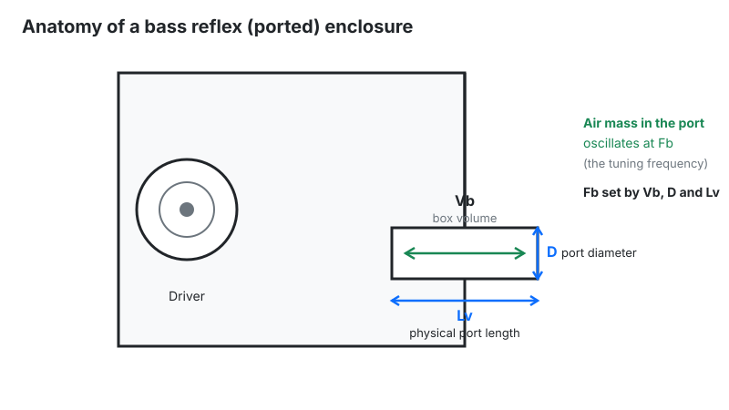
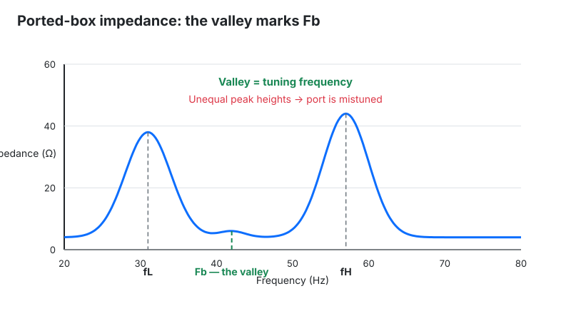

Ported Enclosure Calculator
Last updated: October 18, 2026 · Written by the Pitch Detectors Editorial Team
A ported enclosure calculator sizes the vent for a bass reflex speaker box.
Enter box volume, tuning frequency (Fb), and port shape — this tool outputs the required port length, total vent area, and estimated air velocity for round and slot ports, with design warnings when values go out of bounds.
Key Takeaways
- Port length: Lv = (2100 × D² × N) / (Fb² × Vb) − 0.732 × D (inches, ft³, Hz) — the exact formula this widget uses.
- At Fb, the port produces most of the bass while cone excursion drops to minimum.
- Keep port air velocity under ~17 m/s to avoid chuffing; this calculator flags anything over 25 m/s.
- Below Fb the driver unloads — excursion spikes, so a subsonic filter is mandatory at high power.
- Calculate with net volume: subtract driver, port, and bracing displacement first.

What Is a Ported Enclosure?
Think of blowing across a bottle top: the air in the neck bounces on the spring of the air inside.
A ported box works the same way — the port's air mass and the box's air volume form a resonator tuned to Fb.
Near Fb the port does the heavy lifting, which is why ported subs play deeper and louder than sealed equivalents from the same driver.
The trade: below Fb the resonator stops helping and the driver unloads — excursion rises steeply, risking damage at high power. Ported boxes ring slightly longer near tuning (higher group delay) than sealed boxes.
How This Calculator Works
This calculator solves the Helmholtz-based port length formula for your box volume and target tuning, then derives vent area and a rough air-velocity estimate.
Round ports use the true diameter; slot ports convert via an equivalent diameter so the same physics applies.
Methodology: the widget implements Lv = (2100 × D² × N) / (Fb² × Vb) − 0.732 × D, with D in inches, Vb in cubic feet, Fb in Hz; 0.732 is the flanged end-correction factor.
Slot ports convert via equivalent diameter Deq = 2√(A/π). Air velocity is a built-in rough estimate that flags above 25 m/s.
Formula + Worked Example
Lv = (2100 × D² × N) / (Fb² × Vb) − 0.732 × D
Lv, D in inches · Vb in ft³ · Fb in Hz · N = number of ports.
Worked example: 2.0 ft³ box tuned to Fb = 35 Hz with one 4-inch round port:
- Numerator: 2100 × 4² × 1 = 2100 × 16 = 33,600.
- Denominator: 35² × 2.0 = 1225 × 2 = 2,450.
- Divide: 33,600 / 2,450 = 13.71.
- Subtract end correction: 13.71 − 0.732 × 4 = 13.71 − 2.93 = ≈ 10.8 inches — exactly what the widget returns for these inputs.
Three relationships to internalize: lower tuning needs a longer port; bigger diameter needs a longer port; bigger box needs a shorter port.
How to Use This Calculator
- Box net volumeUsable air volume in cubic feet after subtracting driver, port, and bracing displacement.
- Tuning frequency (Fb)Target Helmholtz resonance in Hz — 28–35 Hz is typical for home subwoofers, 35–45 Hz for car audio.
- Port architectureRound cylinder or rectangular slot. Slots share a wall with the box; round ports use tubes.
- Port diameter / slot dimensionsInternal diameter in inches (round) or width × height (slot). Bigger area means less noise but a longer port.
- Number of portsMultiple smaller ports fit where one big one will not; total area is what matters.
- Read the warningsThe design-feedback box flags too-short, too-long, or too-fast ports — heed it before cutting wood.
Reading Your Result
| Output | Healthy range | If it's out of range |
|---|---|---|
| Port length | 2–20 inches typical | Under 2": tuning is imprecise — use a smaller diameter. Over 20": will not fit — use a slot port or larger diameter. |
| Vent area | 12–16 sq in per ft³ (subwoofers) | Too small: expect chuffing at high output. Too big: the port will not fit or tunes imprecisely. |
| Air velocity | Under ~17 m/s ideal | Over 25 m/s (widget flags this): enlarge port area or add a flare. |
The 0.732 in the Formula: End Correction Explained
A port behaves longer than its physical length because the air just outside the mouth oscillates with the air inside — like water sloshing past a harbor entrance.
This end correction is not one number: it depends on the port ends.
| Port ends | Correction factor (k) | Used for |
|---|---|---|
| One free, one flanged | 0.732 | Typical tube port through a baffle — what this widget uses |
| Both ends free | 0.614 | Tube suspended with air around both mouths |
| Both ends flanged | 0.850 | Port flush in baffle at both ends |
Ignore end correction and your box tunes higher than intended — a 35 Hz design can land at 38 Hz, audibly shifting the bass character.
Slot ports that share a box wall get extra effective length from the wall itself, which is one reason slot-ported boxes often measure slightly lower than the raw math predicts.
Port Noise: The 17 m/s Rule
Chuffing — the puffing, whistling noise from a port at high output — is air turbulence at the port mouth. It starts when air velocity exceeds roughly 5% of the speed of sound (0.05 × 343 ≈ 17 m/s).
Below that, flow stays smooth and silent; above it, turbulence grows fast.
Size the port from the driver, not just the box: the minimum port diameter follows driver displacement — big-excursion 15" drivers move far more air than 10" ones at the same box volume.
The 12–16 in² per ft³ rule covers typical subwoofers; high-excursion monsters want the upper end or a second port.
Three fixes, in order of effectiveness.
Enlarge the port area (velocity drops with area), flare the ends (aeroports with flared mouths tolerate ~25–30 m/s), and turn down — a car sub at full tilt tolerates more noise than a hi-fi sub in a quiet room.
The widget's 25 m/s warning is the "definitely fix this" line.
Below Fb the Driver Unloads — Use a Subsonic Filter
Below Fb, the port stops controlling the cone. Above tuning, the port's air mass restrains the driver; below it, that control vanishes and the driver behaves as if in free air.
Excursion climbs steeply with falling frequency — a 30 Hz-tuned sub playing 20 Hz content at high power can bottom out the voice coil.
The fix is a subsonic (infrasonic) filter: a high-pass set just below Fb (typically 3–5 Hz under tuning, 12–24 dB/octave).
It costs nothing audible — little musical content lives down there — and it converts a blown-driver warranty claim into a non-event. Any ported subwoofer driven hard without one is living dangerously.

Net Volume: Subtract Before You Calculate
The formula wants net air volume — what remains after the driver basket, the port tube itself, and internal bracing.
Worked example: a box with 2.0 ft³ gross internal volume, a 12" driver displacing 0.15 ft³, a 4"×14" port displacing ~0.10 ft³, and bracing at 0.05 ft³ nets 1.70 ft³.
Designing for 2.0 ft³ when you really have 1.7 tunes the box nearly 10% sharp.
Always work backwards: pick target net volume → add displacements → cut wood for the gross volume. The port's own displacement is the one builders most often forget — and it is the largest of the three.
Leave at least one port diameter of clearance behind the port's inner mouth; a nearby wall detunes the port and adds noise.
Limitations
- End correction is approximate. The widget uses the standard flanged factor (0.732 × D); free-end or flared ports shift the effective length — measure twice, cut once.
- Ideal Helmholtz model. Real boxes have leakage, absorption, and panel flex that shift Fb a few percent from the math.
- Velocity is a rough estimate. The widget's approximation assumes ~1 W drive; real velocity scales with actual power and program material.
- No driver parameters. Vas, Fs, and Qts determine whether a driver suits a ported box at all — the calculator sizes the port, not the alignment.
Use these numbers to cut wood with confidence, then verify Fb with an impedance measurement of the finished box.
Ported vs Sealed: Which Box for You?
| Ported (bass reflex) | Sealed | |
|---|---|---|
| Bass extension | Deeper (−3 dB point typically 10–15 Hz lower) | Shallower but rolls off gently (12 dB/oct) |
| Output | +3–6 dB more around Fb | Less efficient down low |
| Transient response | More group delay near Fb | Tighter, better damped |
| Protection | Needs subsonic filter below Fb | Air spring protects the driver naturally |
| Size | Larger box + port volume | Compact |
| Choose when | Maximum deep bass per dollar (home theater, car SPL) | Accuracy-first music systems, small rooms |
Compare directly: sealed box calculator for the airtight alternative. Working in metric? Use the bass reflex port length calculator (cm and liters).
Frequently Asked Questions
Port dimensions are calculated from the ideal Helmholtz model. Verify the finished box by measuring its impedance valley, and always use a subsonic filter when driving a ported subwoofer hard.